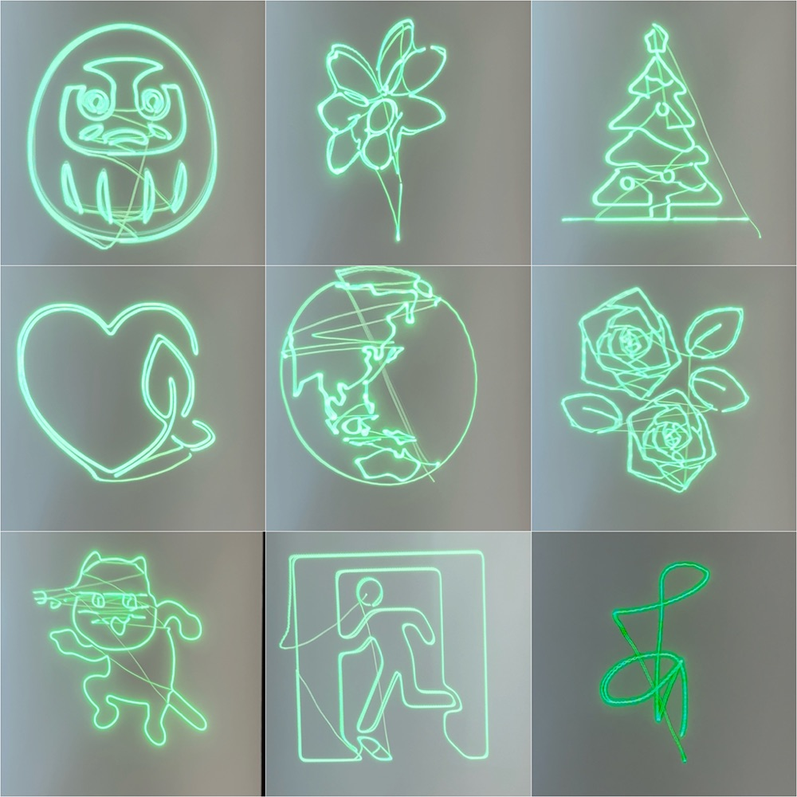

iOS アプリ、ヘルスケアのデータ基盤、レーザー描画装置。 企画・設計・実装から App Store 審査・サポートページ運用まで、ひととおり自分でやっています。 動くところで止めず、人が使える状態にするまでを一区切りにしています。
App Store で公開中のもの、TestFlight で配布中のもの。サポートページとプライバシーポリシーも自分で用意して運用しています。
健康データは、見ようと思わないと見ません。かといって通知にすると強すぎる。 その中間として Dynamic Island に ひとつの数値だけを出し続けるアプリです。 意味づけはせず、数値と矢印だけを出して、解釈はそのまま持ち主に委ねています。
iPhone と Apple Watch の両対応アプリ。App Store Connect 連携、サポート・プライバシーポリシーのページまで含めて公開・運用しています。
自転車で走るとき、行きは向かい風・帰りは追い風になるルートを提案するアプリ。当日と翌日の風予報を取得して比較できます。
買い物・在庫管理を、入力ではなく写真で済ませるためのアプリ。インストール手順ページを用意して配布しています。
在庫管理アプリの別アプローチ版。同じ課題に対して構成を変えて作り直したものです。
Apple Watch から取れる生体データを、家族や医療の現場で「見られる形」にするための仕組みです。
訪問医療・家族見守りを想定した、健康データの収集・閲覧システム。 iOS アプリで HealthKit のデータを集め、Firestore に送り、Web の管理ダッシュボードでリアルタイムに閲覧します。 実機での動作確認とダッシュボードの公開運用まで完了しています。
体調を数値ではなく「状態」として見せるアプリ。円の満ち具合で表示し、離れて暮らす家族が 「大丈夫そうか」だけを一目で分かるようにしています。
いずれも仕様を書いたうえで実装し、実機で動作するところまで作っています。
画面の中だけでなく、実際に物として動くものも作っています。
ESP32 で 2 軸のガルバノミラーを高速に振り、グリーンレーザーで空間に線画を描く装置です。 スマホアプリで描いたイラストをその場でリアルタイムに投影できます。 設置型の新しい広告媒体・アート表現としての活用を提案しています。

8×8 の赤外線アレイセンサーで温度分布を取り、離れた場所から「熱の様子」を見るための装置。用途を変えて 2 種類作りました。
カメラ映像からカラスを検知して通知する仕組み。農地や施設まわりの被害対策を想定した小規模構成です。
自作デバイスを電池で動かすときの勘所を、データシートではなく実測で詰めています。
作るものより、進め方のほうが一貫しているかもしれません。
着手する前に仕様書を書き切ります。書けないものは、だいたいまだ分かっていないものです。
「iOS の仕様上ここは回避できない」といった制約と既知の不具合を、仕様書に明記します。次に触る人が同じ壁で消耗しないように。
動いたところで止めません。審査提出、プライバシーポリシー、サポートページまで含めて一区切りとしています。
設計と判断は自分で持ち、実装は AI コーディングエージェントと進めます。だから仕様書の質がそのまま成果物の質になります。
| 領域 | 内容 |
|---|---|
| モバイル | Swift / SwiftUI、watchOS、HealthKit、ActivityKit（Dynamic Island）、WidgetKit、MapKit、App Store 審査・運用 |
| クラウド | AWS（Lambda / DynamoDB / API Gateway / S3 + CloudFront / Bedrock / CDK）、Azure（OpenAI / AI Search / Functions）、Firebase |
| AI / LLM | RAG（チャンク設計・ハイブリッド検索・出典付与）、ローカル LLM、AI コーディングエージェントを前提とした開発フロー |
| 組込み | ESP32、ガルバノミラー制御、AMG8833 サーマルアレイ、BLE、電池駆動設計 |